Being linear and only weakly coupled, these equations are easily solved.
The equation of continuity of the mixture (4.13) can be immediately integrated to give 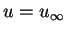, a constant.
This may be substituted into the equation of continuity of vapour
(4.14), which can then be integrated twice to give:
| 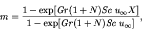 | (4.22) |
Now that  and
and  are known, the energy equation simplifies to:
are known, the energy equation simplifies to:
The solutions for the pressure gradient and vertical component of velocity are;
| 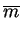 | 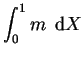 | ||
| 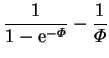 | (4.30) | ||
| 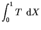 | |||
| 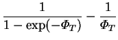 | (4.31) |
The vapour mass fraction and temperature profiles are illustrated in figure 4.1, and the velocity profile in figures 4.2 - 4.4.
| 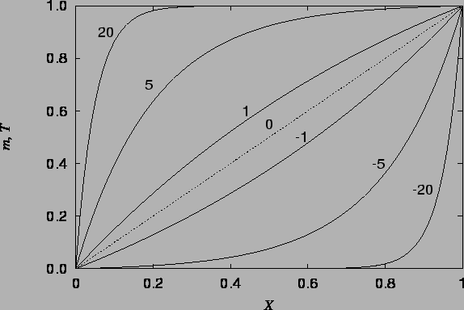 |
| 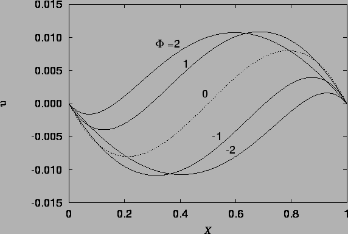 |
| 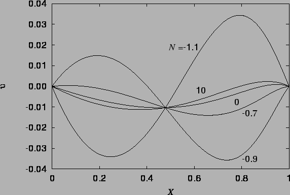 |
 |
As in the heat transfer only solution of Aung (1972),
the temperature (and here also mass fraction)
distribution is unaffected by the vertical velocity; this can be seen from
the fact that the combined Grashof number,
 , does not appear
in the solutions (4.26) or (4.24).
, does not appear
in the solutions (4.26) or (4.24).
With the substitution of mole fractions for mass fractions (because of the assumption of constant density rather than constant total molar concentration), the distributions of vapour mass fraction (4.24) and temperature (4.26) are identical to those given by Bird et al. (1960, pp. 572-4) for simultaneous heat and mass transfer across a stagnant film of noncondensable gas (see also Bird et al. 1960, pp. 522-6; Rohsenhow & Choi 1961, pp. 398-400; Greenwell et al. 1981 for derivations of the same mass fraction profile in other configurations).
A temperature distribution with the same form as equation
(4.26) was suggested by Ranganathan and Viskanta
(1988; reviewed in §3.3.8)
for a square cavity (
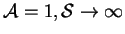) with
 and
and  in the special cases
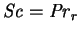, for
which net buoyancy effects vanish everywhere, and
in the special cases
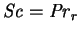, for
which net buoyancy effects vanish everywhere, and
 , for which the mass transfer-induced horizontal
velocities are assumed to overwhelm the buoyancy-induced vertical
velocities. Neither of these conclusions is quite correct.
, for which the mass transfer-induced horizontal
velocities are assumed to overwhelm the buoyancy-induced vertical
velocities. Neither of these conclusions is quite correct.
In the first case,
, it results that the temperature distribution depends on the
specific heat capacity of the mixture, whereas it is evident on expressing
equation (4.26) in terms of primitive quantities that it
only depends on the partial specific heat of the vapour, since
In the second case,
 , their solution is inconsistent
with the no-slip boundary conditions at the floor and ceiling. These will
affect a large proportion of the cavity,
since this is not narrow (
, their solution is inconsistent
with the no-slip boundary conditions at the floor and ceiling. These will
affect a large proportion of the cavity,
since this is not narrow (
 ) in their study.
As shown by Meyer and Kostin (1975; reviewed in §3.2.2),
the nonslip walls give rise to a circulation of the gas.
) in their study.
As shown by Meyer and Kostin (1975; reviewed in §3.2.2),
the nonslip walls give rise to a circulation of the gas.
A concentration profile similar to equation
(4.24) also occurs as the exact solution of the general
one-dimensional advection-diffusion equation
discussed by Patankar (1980, p. 86) in
connection with upwinding in finite volume numerical schemes.
There, the parameter  of equation (4.24) plays the role of a cell Peclet number.
Recall (§3.2.3) that Markham and Rosenberger (1980) called
of equation (4.24) plays the role of a cell Peclet number.
Recall (§3.2.3) that Markham and Rosenberger (1980) called
 the Peclet number of a Stefan diffusion tube.
the Peclet number of a Stefan diffusion tube.
The velocity profile (4.27), illustrated in figures 4.2 - 4.4 is a new result, differing from the single fluid heat transfer cubic profile because of the horizontal advection of vertical momentum due to the vapour migration and the curved buoyancy distribution; the temperature and mass fraction varying differently and nonlinearly across the cavity.
The vapour mass fraction (4.24),
temperature (4.26) and
velocity (4.27) solutions
all have singularities at
 , but these are removable. This can be seen from the Maclaurin
series in
, but these are removable. This can be seen from the Maclaurin
series in  for
for  , for example:
, for example:
| 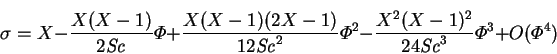 | (4.33) |
The dashed line in figure 4.2, drawn from
equation (4.36),
also represents the solution
for the analogous single fluid heat transfer problem;
i.e. Aung's (1972) solution, since then the buoyancy ratio,  ,
enters only through the speed scale in the definition of
,
enters only through the speed scale in the definition of  (2.27).
(2.27).
There are also removable singularities at
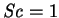 and
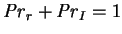
which are less important. The nondimensionalization breaks down in
the vicinity of  , as discussed in §2.6.2. Note
the dramatic difference between the velocity profiles in
figure 4.3 for
, as discussed in §2.6.2. Note
the dramatic difference between the velocity profiles in
figure 4.3 for  and 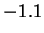.
and 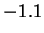.